← 웹툰 책장
우리 어디서 봤죠?
8화, 그림 16장. 그림 위에 영어 말풍선이 있어요. 한국어 뜻은 그림 밑에 있어요. 그림을 누르면 말풍선이 꺼지고 켜집니다.
시작하기 전에
보리(15)는 새 운동화가 갖고 싶어요. 가진 건 날마다 우유를 반 갈라 주는 단짝 두부 하나예요.
어느 날 문방구 앞에 못 보던 뽑기 기계가 서 있어요. 동전 하나를 넣으면 갖고 싶은 게 생겨요. 대신 기계가 하나를 가져가요.
- 보리15 · 낡은 운동화
- 두부15 · 보리의 단짝
- 세아15 · 옆자리, 뭐든 새것
- 한솔아무도 모르는 아이
1화
WITH: 딱 붙어서 함께
없는 아이 · 33과1화 1장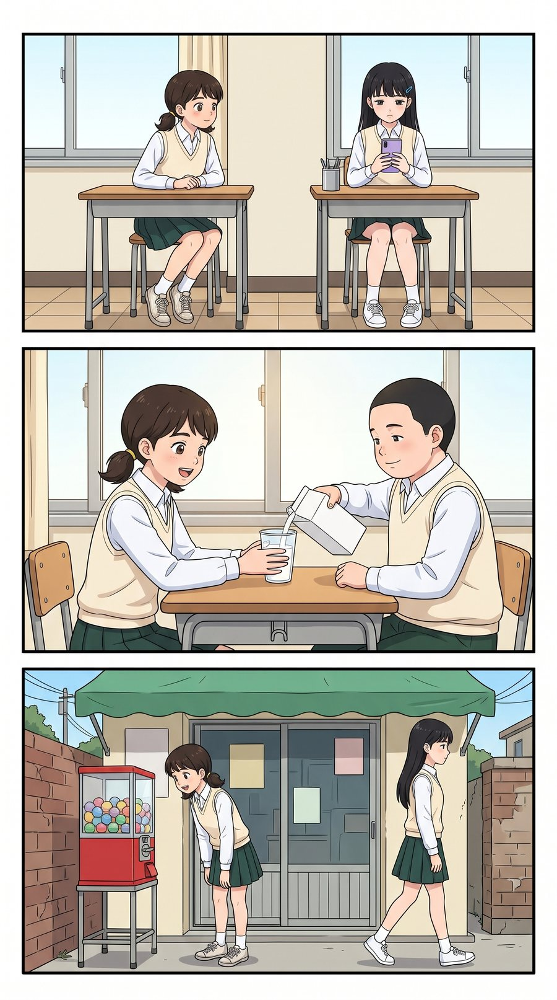
Look at me, with these old shoes.
Drink it with me. Half and half!
A capsule machine? It wasn't here yesterday.
Monday
- 컷 1 · 시각Monday월요일
- 컷 1 · 보리Look at me, with these old shoes.나 좀 봐, 이 낡은 운동화를 신고.
- 컷 2 · 두부Drink it with me. Half and half!나랑 같이 마시자. 반반!
- 컷 3 · 보리A capsule machine? It wasn't here yesterday.뽑기 기계? 어제는 없었는데.
1화 2장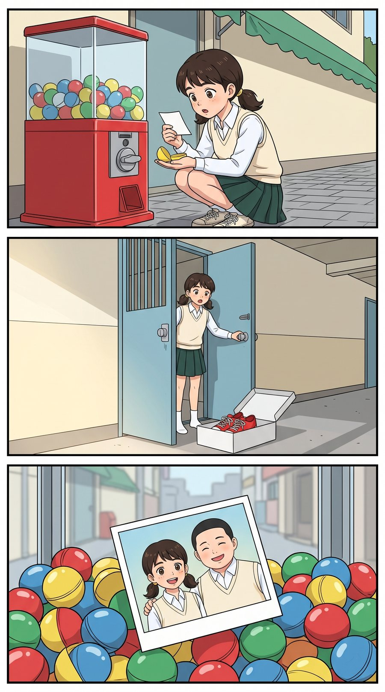
What do you want?
New shoes… with no holes.
No way. They really came!
Next morning
- 컷 1 · 보리New shoes… with no holes.새 운동화… 구멍 없는 걸로.
- 컷 1 · 쪽지 글What do you want?무엇을 원하니?
- 컷 2 · 시각Next morning다음 날 아침
- 컷 2 · 보리No way. They really came!말도 안 돼. 진짜 왔어!
2화
BY: 바로 곁에
처음 뵙겠습니다 · 34과2화 1장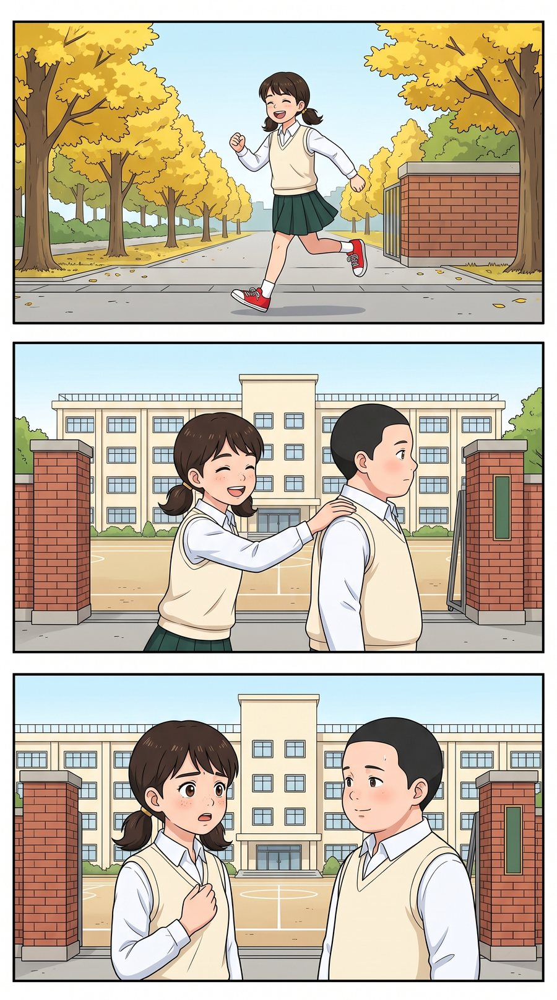
My feet feel so light!
Dubu! Look at my shoes!
Um… Have we met?
- 컷 1 · 보리My feet feel so light!발이 이렇게 가볍다니!
- 컷 2 · 보리Dubu! Look at my shoes!두부야! 내 운동화 좀 봐!
- 컷 3 · 두부Um… Have we met?저… 우리 어디서 봤죠?
2화 2장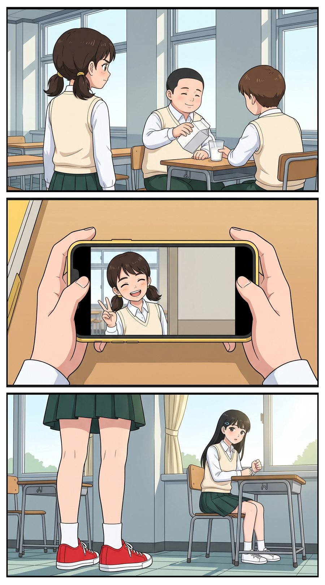
That milk… He sat by me every day.
Those shoes… She stood by that machine.
- 컷 1 · 보리That milk… He sat by me every day.저 우유… 쟤는 날마다 내 곁에 앉았는데.
- 컷 3 · 세아Those shoes… She stood by that machine.저 운동화… 쟤, 그 기계 곁에 섰구나.
3화
FROM: 출발한 곳
환불 안 됨 · 35과3화 1장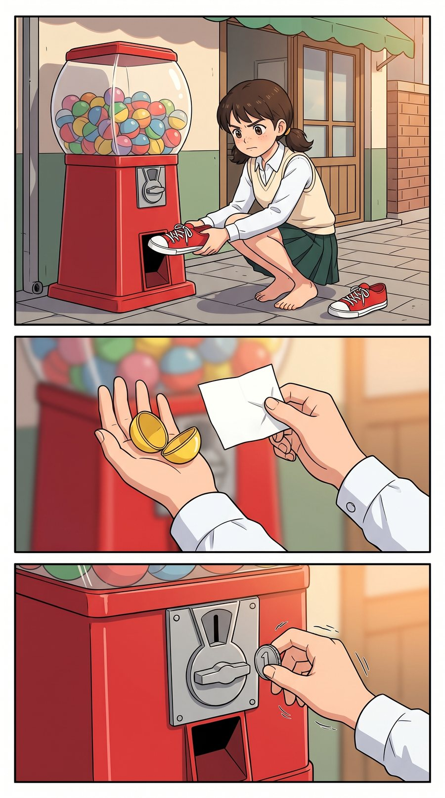
Take them back! I don't want them!
Want him back?One coin.
After school
- 컷 1 · 시각After school방과 후
- 컷 1 · 보리Take them back! I don't want them!도로 가져가! 이거 필요 없어!
- 컷 2 · 쪽지 글Want him back? / One coin.그 애를 되찾고 싶니? / 동전 하나.
3화 2장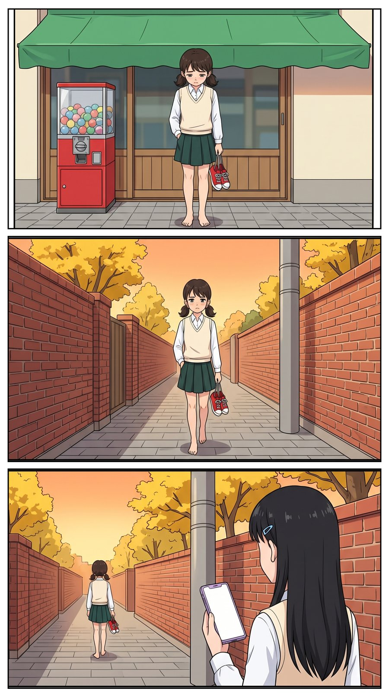
No. Then someone else forgets me.
I'll start again. From hello.
Contacts0
She walked away from it. I couldn't.
- 컷 1 · 보리No. Then someone else forgets me.아니야. 그럼 또 누가 날 잊잖아.
- 컷 2 · 보리I'll start again. From hello.다시 시작할 거야. 「안녕」부터.
- 컷 3 · 세아She walked away from it. I couldn't.쟤는 저기서 걸어 나왔네. 난 못 그랬는데.
- 컷 3 · 폰 화면Contacts / 0연락처 / 0명
4화
ABOUT: 주변을 빙 둘러
점심 · 36과4화 1장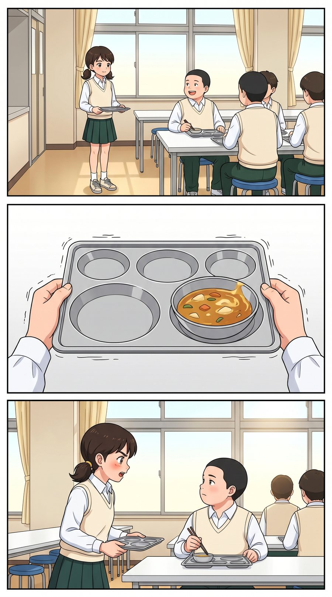
He doesn't know anything about me.
Hi. Can I eat with you?
- 컷 1 · 보리He doesn't know anything about me.쟤는 나에 대해 아무것도 몰라.
- 컷 3 · 보리Hi. Can I eat with you?안녕. 같이 먹어도 돼?
4화 2장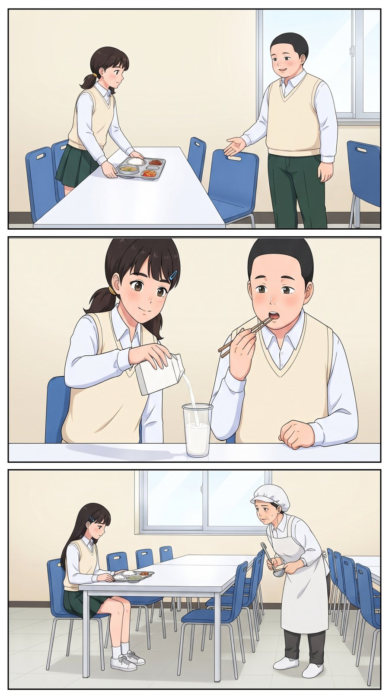
Sure. Sit here. Do I know you?
You like milk. I know all about you.
Are you new here, dear?
- 컷 1 · 두부Sure. Sit here. Do I know you?그럼. 여기 앉아. 내가 널 아나?
- 컷 2 · 보리You like milk. I know all about you.너 우유 좋아하지. 난 너에 대해 다 알아.
- 컷 3 · 아주머니Are you new here, dear?얘, 전학 왔니?
5화
OVER & UNDER: 위와 아래
다 가졌다 · 37과5화 1장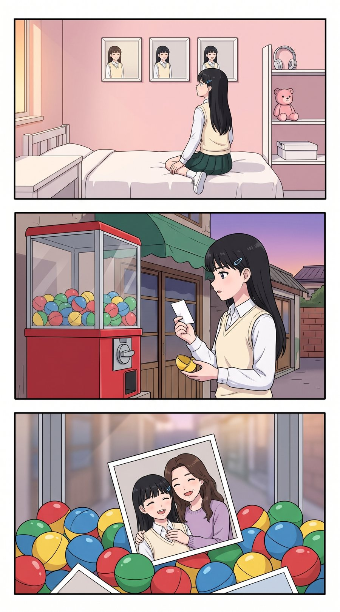
So many new things. Only me in the photos.
What do you want?
First place. Over everyone.
Se-a's room
- 컷 1 · 시각Se-a's room세아의 방
- 컷 1 · 세아So many new things. Only me in the photos.새것은 이렇게 많은데. 사진엔 나뿐이네.
- 컷 2 · 세아First place. Over everyone.1등. 모두의 위로.
- 컷 2 · 쪽지 글What do you want?무엇을 원하니?
5화 2장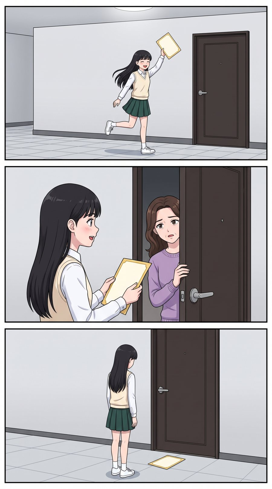
No. 1
Mom! Look! I'm number one!
I'm sorry… Who are you?
It's over. Nobody knows me now.
- 컷 1 · 세아Mom! Look! I'm number one!엄마! 봐! 나 1등이야!
- 컷 1 · 상장No. 11등
- 컷 2 · 엄마I'm sorry… Who are you?죄송한데… 누구세요?
- 컷 3 · 세아It's over. Nobody knows me now.끝났어. 이제 아무도 날 몰라.
6화
INTO & OUT OF: 안으로, 밖으로
손 · 38과6화 1장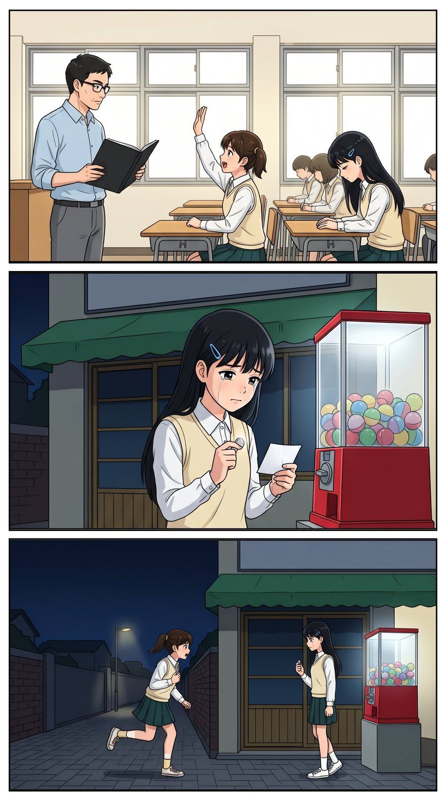
It's Se-a, sir! Her name is Se-a!
One coin into the machine… and Mom comes back.
Want her back?One coin.
Stop! Then who forgets you next?
Only you are left.
That night
- 컷 1 · 보리It's Se-a, sir! Her name is Se-a!세아예요, 선생님! 얘 이름은 세아예요!
- 컷 2 · 시각That night그날 밤
- 컷 2 · 세아One coin into the machine… and Mom comes back.동전 하나만 기계 안에 넣으면… 엄마가 돌아와.
- 컷 2 · 쪽지 글Want her back? / One coin.그 사람을 되찾고 싶니? / 동전 하나.
- 컷 3 · 보리Stop! Then who forgets you next?멈춰! 그럼 다음엔 누가 널 잊는데?
- 컷 3 · 세아Only you are left.이제 너 하나 남았어.
6화 2장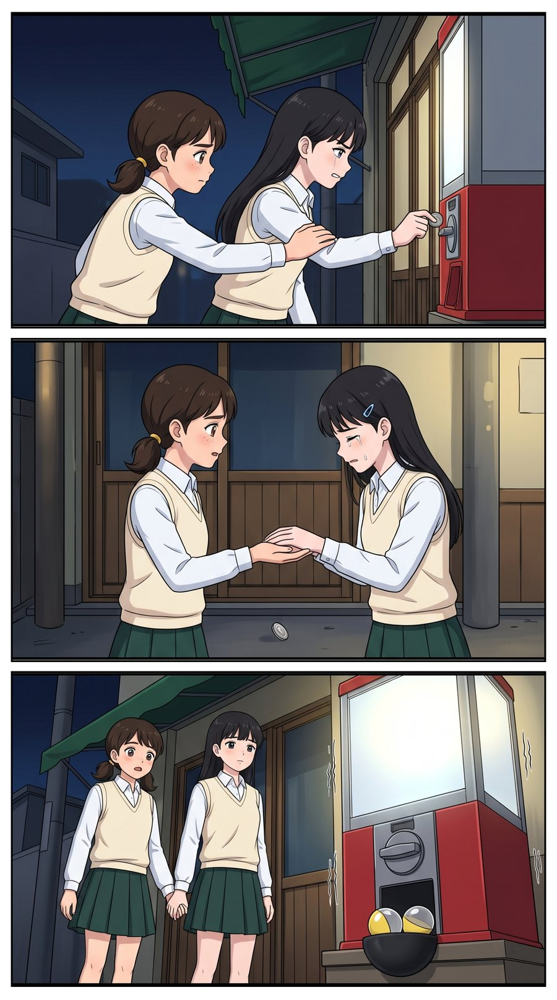
Don't put it into the machine!
Let it go. Take my hand.
It came out of the machine… by itself?
- 컷 1 · 보리Don't put it into the machine!그거 기계 안에 넣지 마!
- 컷 2 · 보리Let it go. Take my hand.그건 놔. 내 손을 잡아.
- 컷 3 · 세아It came out of the machine… by itself?기계에서 저절로… 나왔어?
7화
UP & DOWN: 올라가고 내려가고
기계 속 · 39과7화 1장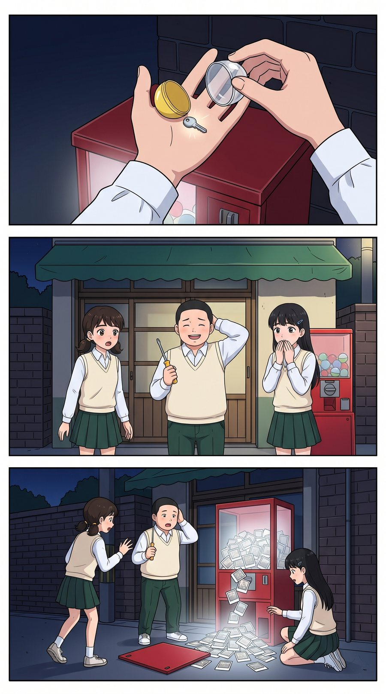
I don't know why. But I want to help.
So many photos! They keep falling down!
- 컷 2 · 두부I don't know why. But I want to help.왜인지는 나도 몰라. 그냥 돕고 싶어.
- 컷 3 · 보리So many photos! They keep falling down!사진이 이렇게 많아! 계속 쏟아져!
7화 2장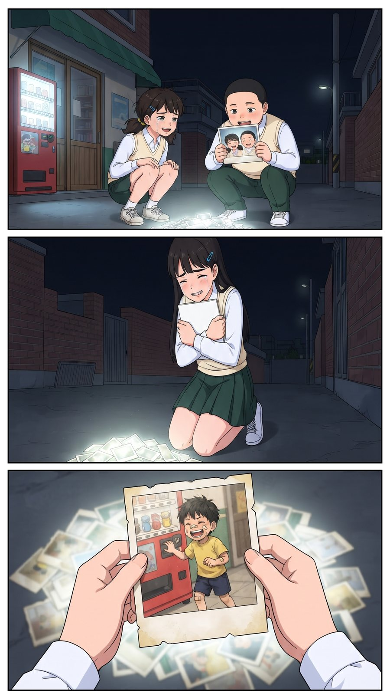
It took you. But I still have you.
Mom… I'll never give you up.
Down at the bottom… a boy, all alone.
- 컷 1 · 보리It took you. But I still have you.기계가 널 가져갔어. 그래도 넌 아직 내 곁에 있어.
- 컷 2 · 세아Mom… I'll never give you up.엄마… 다시는 엄마를 내주지 않을게.
- 컷 3 · 보리Down at the bottom… a boy, all alone.저 맨 밑에… 남자아이가 혼자 있어.
기계가 가져간 사람은 사라진 게 아니었어요. 기계 안에 사진으로 쌓여 있었어요.
맨 밑에서 나온 제일 오래된 사진 속 아이는 이 기계의 첫 손님이에요. 이 아이도 무언가를 빌었고, 모두에게 잊혔어요.
8화
다섯째 달 복습 (33과 - 39과)
이름 · 40과8화 1장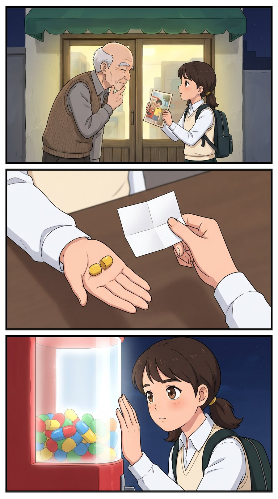
This boy? I've never seen him.
I wantedfriends.
It says Hansol. Hansol… are you in there?
- 컷 1 · 할아버지This boy? I've never seen him.이 아이? 한 번도 본 적 없는데.
- 컷 2 · 쪽지 글I wanted / friends.나는 친구가 / 갖고 싶었어.
- 컷 3 · 보리It says Hansol. Hansol… are you in there?「한솔」이라고 적혀 있어. 한솔… 너 이 안에 있니?
8화 2장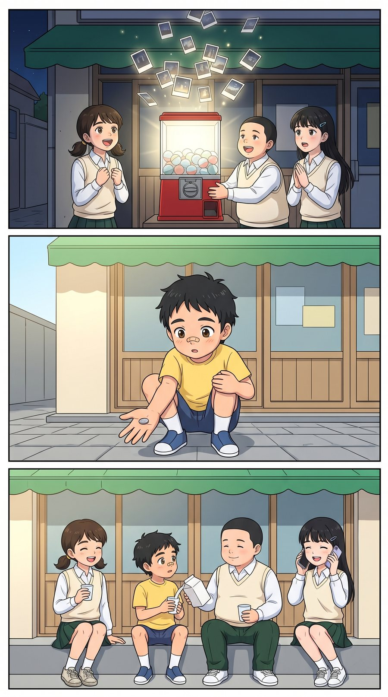
Hansol! Come out! Come with us!
…Someone called my name.
Not yet. Hi.
Um… Have we met?
Next morning
- 컷 1 · 보리Hansol! Come out! Come with us!한솔아! 나와! 우리랑 같이 가자!
- 컷 2 · 시각Next morning다음 날 아침
- 컷 2 · 한솔…Someone called my name.…누가 내 이름을 불렀어.
- 컷 3 · 보리Not yet. Hi.아직. 안녕.
- 컷 3 · 한솔Um… Have we met?저… 우리 어디서 봤어?
다 읽고 나서
기계는 물건을 주고 나를 아는 사람 한 명을 가져갔어요. 보리는 운동화를 얻고 두부를 잃었고, 세아는 다 얻고 엄마까지 잃었어요.
그런데 가져간 건 사라진 게 아니었어요. 전부 기계 안에 사진으로 있었어요. 맨 밑엔 친구가 갖고 싶었던 아이, 한솔이 있었어요.
이 만화를 꿰는 문장이에요. 같은 말이 2화에선 가장 아프고, 8화에선 가장 반가워요.
- 2화Have we met?두부가 보리를 처음 보는 사람처럼 보며 한 말
- 7화It took you. But I still have you.보리가 사진을 든 두부에게 한 말
- 8화Have we met? — Not yet. Hi.한솔이 묻고 보리가 답한 인사
끝.